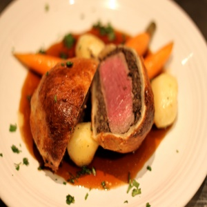
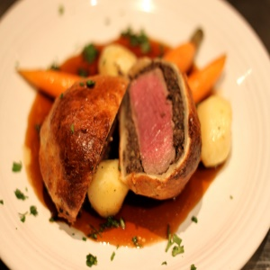

Categories
Asian DishesBeef
Breakfast
Burgers
Cakes
Chicken
Cookies
Cultural Foods
Dessert
Drinks
Fruits & Vegetables
Healthy Meals
Late Night
Mediterranean
Party Dishes
Pasta
Pizza
Relaxing Dishes
Salads
Sandwiches
Seafood
Soups
Sweets
Warm Beverages
Meals With Prep
Beef Wellington is a preparation of filet steak coated with pâté (often pâté de foie gras) and duxelles, which is then wrapped in puff pastry and baked. Some recipes include wrapping the coated meat in a crêpe to retain the moisture and prevent it from making the pastry soggy.
A whole tenderloin may be wrapped and baked, and then sliced for serving, or the tenderloin may be sliced into individual portions prior to wrapping and baking. Many spices may be added to enhance the flavour; some examples are allspice and ginger.
Wikipedia
Estimated Calorie Count: ~5940 total / ~ 495 - 742 per serving
This recipe serves 8-12

We hope you enjoy this!
*Please note: Your meal may come out different than the photo shown.
You are always free too add or leave out any ingredients.
Back To Meals With Prep
Go back & select another category
Jump to a random meal
tweet share
Wikipedia
ingredients
|
instructions
|
This recipe serves 8-12

We hope you enjoy this!
*Please note: Your meal may come out different than the photo shown.
You are always free too add or leave out any ingredients.
Go back & select another category
Jump to a random meal
tweet share